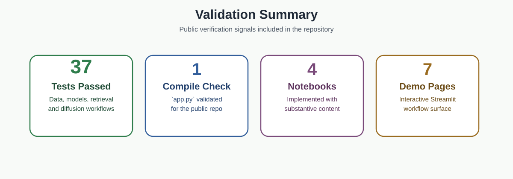

Downstream tasks are supported by the shared multimodal embedding surface.
Technical report
A report designed to be read, not endured.
This technical report captures the modeling choices, training strategy, retrieval design, and industrial workflow intent behind GeoFusion AI. It stays public enough to establish trust, while keeping the highest-value case-study material for direct collaboration.

Technical scope at a glance
GeoFusion AI combines geometric encoders, transformer-based text modeling, and structured metadata encoding into a shared representation space that supports retrieval, anomaly analysis, property prediction, and generation.
Primary modalities are aligned: geometry, engineering language, and manufacturing metadata.
Public validation tests reinforce that the repository is more than presentation.
Modeling system
The architecture follows a multi-encoder fusion pattern. Each input modality is processed by a dedicated encoder, projected into a common 256-dimensional space, and aligned through symmetric NT-Xent contrastive learning.
Geometry encoder
PointNet++ or DGCNN transform raw point clouds into compact embeddings through hierarchical abstraction or dynamic graph construction.
Text encoder
A transformer-based sentence encoder projects engineering language into the same shared semantic space as geometry.
Metadata encoder
Continuous and categorical manufacturing attributes are normalized, embedded, and projected into the fusion space.
Contrastive aligner
A temperature-scaled similarity matrix and symmetric NT-Xent loss align semantically related geometry-text pairs.
Core model details
The public repository surfaces enough implementation detail to show technical seriousness without turning the entire system into a disclosure event.
PointNet++
- Three set abstraction layers with progressively coarser sampling.
- Farthest point sampling and ball query neighborhood grouping.
- Global feature projection to a 256-dimensional embedding head.
DGCNN
- Four EdgeConv blocks with dynamic k-nearest-neighbor graphs.
- Edge features built from local relationships in feature space.
- Global max and mean pooling for the final representation.
Diffusion model
- DDPM-style design with 1000 timesteps and linear noise schedule.
- Residual denoiser blocks with timestep conditioning.
- Conditional generation with geometry or text signals when needed.
Anomaly detector
- Combines reconstruction-based and density-based scoring.
- Uses calibrated thresholds for warning and critical ranges.
- Targets manufacturing-oriented risk interpretation.
Data, training, and retrieval
Reproducibility matters here because credibility depends on more than the model list. The codebase therefore exposes clear datasets, augmentation logic, training control, and FAISS-backed retrieval behavior.
Data pipeline
- Supports ModelNet40, ShapeNet, and custom point cloud formats.
- Uses composable augmentation including normalization, rotation, jitter, scaling, and flips.
- Generates synthetic engineering-style text metadata for multimodal training.
Training protocol
- AdamW, warmup, cosine scheduling, gradient clipping, and early stopping.
- YAML-driven configuration for repeatable experiments.
- Supports contrastive, triplet, classification, and multi-task losses.
Retrieval system
- FAISS indices support exact, approximate, and quantized search.
- Bidirectional retrieval spans shape-to-shape, text-to-shape, and cross-modal modes.
- Normalized vectors enable cosine-style similarity at scale.
Evaluation
- Classification accuracy, Recall@K, Precision@K, mAP, and threshold-calibrated anomaly metrics.
- Property prediction includes uncertainty-aware reporting.
- Validation remains scoped to claims supported by the public repository.
Industrial workflow intent
The repository is public, but the engineering intent is real: part similarity, anomaly detection, property estimation, and natural-language search over geometry all reflect workflows that matter in industrial contexts.
Part similarity
Encode a query part, retrieve nearest neighbors from FAISS, and support reuse or near-duplicate inspection.
Anomaly analysis
Score new parts against calibrated normal baselines and classify them into interpretable risk levels.
Property prediction
Estimate mass, volume, surface area, stress proxies, and manufacturability with uncertainty-aware outputs.
Text search
Use engineering language such as lightweight bracket or curved support arm to retrieve candidate shapes.
Selected references
The technical foundation draws from widely recognized work in point cloud learning, multimodal representation learning, and diffusion models.
Point cloud learning
- Qi et al., PointNet++, NeurIPS 2017.
- Wang et al., Dynamic Graph CNN, ACM TOG 2019.
Multimodal alignment and generation
- Radford et al., CLIP-style representation learning, ICML 2021.
- Ho et al., Denoising Diffusion Probabilistic Models, NeurIPS 2020.